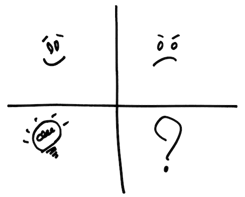

Les pratiques présentées dans ce guide ouvrent la voie vers une vision différente de l’organisation. Une vision basée sur une conviction :
Le changement vers une organisation à la fois plus efficace et plus respectueuse des personnes est possible. Ce changement naît de la somme des apprentissages individuels.
L’amélioration continue, en définitive, est celle des compétences de chaque collaborateur. L’apprentissage devient indissociable du travail, et le « qui doit faire quoi pour réussir » devient « qui doit apprendre à faire quoi pour réussir ».
Cette transformation radicale se construit jour après jour, personne par personne, en allant sur le terrain pour aider chaque collaborateur à réussir sa journée. Cela amène chacun à créer plus de valeur pour ses clients, son entreprise et la société, et trouver ainsi un sens à son travail.
Le chemin vers cet idéal a été tracé par nos prédécesseurs pendant plusieurs décennies, et consigné sous la forme de principes et de pratiques qui ont pris le nom de « lean ».
Ce savoir-faire précieux nous a été transmis par Marie-Pia Ignace et Michael Ballé. Nous vous le transmettons à notre tour, en espérant qu’il vous apportera les mêmes moments de satisfaction, les incroyables déclics qui vous feront prendre de la hauteur.
Régis Medina
Depuis plusieurs années, l'esprit et les pratiques agiles vous ont permis d'améliorer votre satisfaction professionnelle et la performance de vos équipes.
Mais voilà : il reste encore des sources de frustrations. Les autres équipes résistent, les managers ne sponsorisent pas vos initiatives de changement, les clients se plaignent. Il doit bien exister des moyens d'améliorer les choses, mais comment les trouver ?
En vous entraînant aux pratiques lean sélectionnées dans ce livre, vous apprendrez à :
trouver les leviers de l'amélioration qui amèneront vos équipes à un autre niveau de performance ;
résoudre les difficultés que vous rencontrez dans vos relations avec d'autres équipes ou le management ;
livrer des logiciels qui améliorent la vie de vos utilisateurs et dont vous pouvez être fiers.
Ces nouvelles compétences vous apporteront le savoir-faire nécessaire pour insuffler les changements vitaux au sein des organisations.
Ce livre se structure autour de trois apprentissages fondamentaux. Pour chacun d'entre eux, des praticiens agiles vous racontent comment, en appliquant d'autres pratiques, en adoptant d'autres postures, en s'entraînant à fonctionner différemment, ils ont trouvé des solutions simples à des problèmes qui paraissaient complexes.
Puis des experts décrivent les principes lean mis en œuvre dans les histoires présentées.
Enfin, des préconisations de premiers pas vous guident vers la mise en pratique.
Ce livre est né de du désir de praticiens agiles ayant expérimenté le management lean de partager les richesses surprenantes de ce nouveau continent.
Nous souhaitons transmettre ce que nous avons appris lors de notre voyage initiatique. Notre promesse : ça en vaut la peine !
Ce guide comprend trois chapitres :
« Comprendre l’attente du client »
« Visualiser le challenge et les problèmes »
« Trouver les leviers de l’amélioration »
Chaque chapitre est organisé de la façon suivante :
Une description des pratiques agiles sur le thème abordé.
Trois cas réels d’équipes agiles ayant intégré le management lean dans leurs pratiques. Ils décrivent leur contexte, les exercices qu’ils appliquent, et ce qu’ils y gagnent. A la fin de chaque cas, nous analysons et développons les principes lean mis en œuvre.
Une description des pratiques lean sur le thème du chapitre.
Les « premiers pas » que nous proposons de mener pour se lancer.
Des références de lecture pour aller plus loin.
Bonne lecture et du succès dans vos expérimentations !
Le Manifeste agile (http://agilemanifesto.org/) met le client au centre des préoccupations du développement Agile de logiciels. Les signataires insistent en particulier sur la nécessité de collaborer avec le client pour répondre à son besoin : "La collaboration avec les clients plus que la négociation contractuelle."
Dans une approche agile, le périmètre du produit n'est pas figé. L'équipe doit fournir au client toute l'information qui lui permette d'optimiser la production de valeur en fonction de l'effort fourni. En contrepartie, le client est co-responsable de l'atteinte de l'objectif. Il s'implique de manière régulière dans la redéfinition du périmètre fonctionnel. Scrum préconise ainsi l'activité de "Product backlog grooming" tout au long du projet.
Nous retrouvons plusieurs fois mentionné le client dans les douze principes :
"Notre plus haute priorité est de satisfaire le client en livrant rapidement et régulièrement des fonctionnalités à grande valeur ajoutée."
"Les processus Agiles exploitent le changement pour donner un avantage compétitif au client."
"Les utilisateurs ou leurs représentants et les développeurs doivent travailler ensemble quotidiennement tout au long du projet."
L'équipe de réalisation et le client adoptent une posture d'apprentissage à la fois du processus et du produit. Postulat de l'agilité : le besoin n'est pas complètement identifiable en amont de la réalisation et de nombreux changements ultérieurs imposeront à l'ensemble des acteurs de s'adapter en cours de réalisation. Seule une collaboration étroite entre tous les intervenants permettra cet apprentissage.
En agilité, satisfaire le client suppose d’abord de se donner la possibilité d'expérimenter, puis de tirer des enseignements du résultat des expériences afin de redéfinir les prochains éléments à produire.
La démarche traditionnelle présuppose que le besoin du client peut être "capturé". Il est clairement identifié, n'évoluera plus et fait l'objet de spécifications détaillées.
Adoptant une position très différente, les agilistes sont obsédés par une question : « sommes-nous en train de construire le bon produit ? »
Le focus est ainsi déplacé du projet vers le produit. Scrum ancre encore davantage cette importance de l'orientation produit en répartissant les responsabilités anciennement confiées au chef de projet vers un nouveau triumvirat : équipe, Scrum Master et Product Owner.
Le Trimvirat Agile
Comme nous l'avons rappelé, l'équipe agile s’attèle en priorité au défi de livrer rapidement et régulièrement des fonctionnalités au client. Cela permet de confronter son attente à la réalisation. Ensemble, ils inspectent le travail réalisé, puis décident des adaptations nécessaires pour se rapprocher de la satisfaction du besoin.
Les équipes agiles adoptent ainsi un processus qui s'appuie sur des itérations courtes (deux à quatre semaines en Scrum). Elles mettent en œuvre une approche empirique reposant sur une succession rapide et régulière d'essais-erreurs-corrections.
Dans l'objectif de pouvoir livrer rapidement, les exigences fonctionnelles sont découpées en petits éléments qui permettront une focalisation sur de petits lots porteurs de valeur.
Pas de spécification détaillée exhaustive en amont, mais une précision juste à temps (au moment où les fonctions vont être réalisées) sous forme de conversation entre le représentant de l'équipe et le client.
Une pratique courante consiste à formaliser ces éléments sous la forme de User Stories. Ces histoires utilisateur combinent une concision imposée (doit tenir sur une carte) et la détermination de tests d'acceptation par le client (doit être testable).
Pour déterminer le contenu fonctionnel de la prochaine itération, l'équipe agile collabore avec le client en vue de maximiser la valeur ajoutée au produit. Ensemble, ils établissent une liste des prochains éléments à réaliser en précisant l'ordre dans lequel ces éléments doivent être produits. L'ordre déterminé tient compte en priorité de la valeur d'un élément et de l'effort nécessaire à sa réalisation.
En agilité, l'estimation de l'effort n'est pas l'affaire d'un seul individu. Les personnes devant réaliser sont les mieux placés pour estimer. La pratique du Planning Poker permet par exemple d'obtenir une estimation collective de l'effort de réalisation, tout en contribuant à diffuser la compréhension du produit à réaliser.
User Stories
Le manifeste insiste sur l'importance de la production d'un logiciel opérationnel : "Un logiciel opérationnel est la principale mesure d’avancement."
L'obtention de ce logiciel opérationnel en fin d'itération permet à l'ensemble des acteurs de se réunir pour passer en revue les éléments complètement terminés (conformément à la définition de « terminé » établie au préalable avec le client). Cette réunion permet de vérifier l'adéquation de la production au besoin. Les participants obtiennent des informations qui sont exploitées lors de la planification du contenu de la prochaine itération.
Seule la mise à disposition des éléments finalisés auprès des utilisateurs finaux permet de déterminer si l'équipe a construit le bon produit porteur de valeur.
En conséquence, l'objectif ultime de l'équipe agile consiste à se mettre en mesure de mettre en production immédiatement les éléments validés lors de la revue (Continuous delivery), éliminant jusqu'au besoin de définir des versions (releases).
La communauté agile explore de plus en plus le concept du Right Product en expérimentant des pratiques très diverses (inspiration du Lean Startup, notion de Minimal Viable Product), souvent fondées sur une représentation visuelle des concepts (Persona, Impact Mapping, Story Mapping, Empathy Map…).
Exploration du « right product »
Elle cherche également à tirer le meilleur parti de la spécification par l'exemple en allant jusqu'à l'automatisation des tests fonctionnels (BDD pour « Behaviour Driven Development », etc.)
Les sections qui suivent décrivent les expériences de quelques praticiens agiles qui ont mis en œuvre des pratiques lean pour mieux comprendre les attentes de leur client.
Un réseau de dentistes cherche à s’informatiser pour saisir les données de ses patients, aussi bien dans les établissements d’accueil spécialisés que dans les centres de soin en ville ou à l’hôpital.
Lors du recueil des besoins, avec mon équipe de développement, nous avons découvert que les dentistes sont en fait « des geeks qui aiment les Macs ». Nous avons identifié ce qui est important pour eux : la facilité de prise en main, la convivialité et l’utilisation de la souris.
Nous réalisons un go&see 1 en nous rendant sur le terrain (le gemba 2, en terme lean) pour voir comment travaille un praticien.
Le praticien interroge le patient sur ses antécédents et éventuelles allergies, puis examine sa dentition pendant qu’une autre personne saisit au fur et à mesure les informations données par le praticien : « Soin conservateur en 21 !».
C’est sur le gemba que se produit le déclic. L’objectif du dentiste est de faire dix vacations par jour. Occupé à soigner le patient, il n’a pas les mains libres pour effectuer la saisie. Il réussit son challenge grâce à son assistante qui saisit les données au fur et à mesure de l'examen. Notre hypothèse selon laquelle l'utilisateur premier était le dentiste se révèle erronée.
Or, pour aller plus vite, cette assistante n’utilise que les touches du clavier : pas une minute à perdre pour enchaîner ces dix vacations.
Contexte d’utilisation du logiciel
Ce que nous avons observé change notre perception de l’usage de cette application.
Une fois rentrés, nous menons une expérimentation en navigant uniquement avec les tabulations du clavier. C’est une catastrophe ! L’utilisateur est baladé de haut en bas, le faisant tourner en girouette.
L’équipe change la navigation pour que les tabulations suivent l’ordre dans lequel l’assistante effectue la saisie.
Nouveau schéma de navigation au clavier
Sans cette visite au cabinet, là où les choses se passent, nous n'aurions pas détecté les attentes ergonomiques spécifiques de l'assistante. Le logiciel l’aide maintenant correctement pour remplir sa mission.
Qu’avons-nous fait
aller voir le client, sur son lieu de travail, pour mieux comprendre son contexte ;
confronter nos hypothèses avec la réalité du gemba;
adapter l’outil à l’usage dans son contexte
puis retourner sur le terrain pour confirmer la valeur apportée ;
Le résultat
Nous avons découvert un nouvel utilisateur et ses attentes ergonomiques, ce qui nous a amené à adapter le logiciel pour lui en faciliter l’usage.
Ce que j’ai appris
Toute hypothèse sur le client doit être confrontée à la réalité du gemba. C’est une excellente pratique pour identifier la valeur et les préférences du client.
Lors d'un atelier regroupant des créateurs de startups, les participants les plus courageux « pitchent » leur idée. L'un d'entre eux a une intuition formidable : créer un guide touristique international, proposant « les bons plans des autochtones ». Lorsqu'on visite Venise l'été, plutôt que de suer dans un bain de foule sur la place Saint Marc, autant aller siroter un Spriss (la boisson locale) au comptoir du bacaro d'une petite place ombragée. Les vénitiens le savent bien. Le touriste moyen, lui, ne sait pas où trouver ces bons plans.
Très vite, d'autres participants viennent renforcer notre petite équipe naissante et la machine s'emballe. On se retrousse les manches, et on travaille déjà sur les questions fondamentales : Comment récolte-t-on ces astuces ? Combien peut-on vendre ce guide ? etc.
Tout le monde est motivé, prêt à attaquer le développement du site web et de l'application mobile correspondante.
L'animateur intervient en nous demandant d'aller à la rencontre de nos futurs clients. Le lean appelle cette pratique écouter « la voix du client »3 Notre mission : comprendre comment, aujourd'hui, les touristes trouvent leur bons plans.
Profitons de notre situation, en plein cœur de Paris, pour rencontrer des touristes avides d'astuces de Parisiens.
Deux heures plus tard, nous voilà de retour, dépités.
Que s'est-il passé ? L'entrepreneur explique : « Je tombe des nues. On en a vu, des touristes. Mais aucune réponse sur leur difficulté à trouver des bons plans locaux, puisqu’ils n’en cherchent pas. Les plans locaux, ça ne les intéresse pas. Ce qui a de la valeur pour eux, c'est de trouver le bon chemin pour aller voir la Tour Eiffel. »
L'histoire de cette idée géniale se termine ici. Mais pas celle de notre équipe d'entrepreneurs : quelques minutes leur ont suffi pour trouver une nouvelle idée géniale. Mais cette fois-ci, en commençant par une visite terrain 4 avant de s'emballer.
Voilà une belle fin, puisqu'au cours de cette histoire, aucun développeur n'a dû développer un logiciel inutile. L'entrepreneur a pu consacrer l'énergie économisée à d'autres projets plus prometteurs.
L'erreur de l'entrepreneur peut sembler évidente, mais elle est pourtant très répandue. Son idée, comme toutes les idées, reposait sur des hypothèses. L'une de ces hypothèses (« les touristes recherchent les bons plans locaux »), qu'il considérait pourtant comme une évidence, ne correspond pas à la réalité. Cette illusion d'évidence, renforcée par le confort du bureau, retient bien des entrepreneurs, et au moins autant de Product Owners, d'aller se confronter à la réalité. Ils manquent ainsi l'opportunité de valider leurs hypothèses sur les besoins des utilisateurs et les problèmes que ceux-ci rencontrent dans leurs activités.
Qu’avons-nous fait
aller voir plusieurs touristes, les utilisateurs potentiels ;
confronter ses hypothèses avec la réalité du terrain.
Le résultat
Nous avons compris que la valeur pour cette cible est ailleurs, ce qui a évité de perdre du temps à développer une application qui ne rencontre pas son marché.
Ce que j’ai appris
La manière la plus efficace de valider des hypothèses sur les attentes du client est d’aller voir les utilisateurs potentiels
Plus vite nous confrontons ces hypothèses à la réalité du terrain, plus nous gagnons du temps sur la création de la valeur.
Un opérateur télécom vend aux entreprises une solution de centre d'appels virtuels. Cette solution est développée par notre équipe agile de sept personnes. Nous avons hérité d'un code de mauvaise qualité que nous améliorons progressivement. Cependant, nous sommes confrontés à environ deux signalisations 5 par jour de nos utilisateurs finaux. Cela provoque une tension avec le management, notre commanditaire est furieux, et les relations avec les exploitants sont difficiles.
Je décide de prendre le cas au sérieux. Pour cela, je commence par lire les tickets d'incidents dans l'outil de ticketing du SAV. Il y a beaucoup de types de tickets différents. Je les compte et les catégorise. Cela constitue un bulletin de santé que j'affiche sur le mur à l'entrée de notre War Room.
Bulletin de santé du projet Condor
Les trois catégories les plus volumineuses sont :
formation utilisateur : les utilisateurs ne comprennent pas comment fonctionne l'application ;
réseau et plateforme : pas directement liée à des défauts logiciel ;
mystère : nous ne savons pas identifier l'origine de la signalisation.
Première surprise, le grand gagnant est la catégorie « mystère ». Deuxième surprise, il y a finalement une minorité de signalisations liées à la qualité logicielle. Par ailleurs, je me rends compte que de nombreux tickets sont restés sans réponse : ils étaient abandonnés dans l’outil.
Désarçonnés par le flou de ces tickets mystère, nous décidons d'avancer sur notre problème en nous donnant les moyens d'identifier l'origine des prochaines signalisations. Nous faisons un travail important d'amélioration des logs de l'application. Les récapitulatifs quotidiens qui remontent par mail les erreurs et les warnings contiennent plusieurs centaines de lignes hétérogènes. Nous donnons un format standard à ces logs, en décrivant les informations devant y figurer (client, identifiant d'appel, raison de l'erreur avec un élément de contexte).
Nous nous rendons compte qu'il est difficile de suivre un appel téléphonique entier car certaines logs sont sur les SVI (Système Vocal Interactif) et d'autres sont sur les serveurs d'application. Nous développons un script d'agrégation pour consolider chronologiquement ces sources différentes.
Nous faisons alors diminuer drastiquement la catégorie mystère de 30% à 5%.
Maintenant que nous voyons plus clair, un motif important de signalisation semble liée au protocole de communication avec le serveur du réseau télécom qui est basé sur de l'UDP. Rien ne garantit dans ce protocole que l'information ne soit pas perdue. Dans un certain nombre de cas, la perte d'un événement entraîne le blocage des appelants sur une file d'attente du SVI. Il faut attendre le timeout du SVI qui est de 30 mn. C'est inacceptable pour l'équipe. Nous décidons de mettre en place un mécanisme de gestion de timeout. Cela demande d'ajouter une couche de simulation du temps pour la compatibilité avec les tests automatiques.
L'équipe est satisfaite car elle a fait diminuer les signalisations liées à la perte d'appel. Elle évite à des personnes de payer 30 minutes avant de se faire raccrocher au nez.
Comme certains tickets sont toujours inexpliqués, nous décidons d'envoyer un binôme en observation chez le client ayant le trafic le plus élevé.
Accueillis dans une atmosphère tendue, nous allons observer les agents du centre d'appel avec leur superviseur.
Sous nos yeux, une opératrice double-clique sur le bouton de pause. Cela a pour effet de demander une pause et de sortir de pause immédiatement. Surpris, nous lui demandons pourquoi elle fait cette opération. Elle nous explique qu'elle repasse ainsi devant ses collègues dans la file d'attribution des appels, afin de prendre plus d'appels. Le superviseur nous explique que les agents sont intéressés au nombre d'appels traités. Sidérés, nous comprenons alors les incidents de distribution d'appels remontés par les autres, étonnés que leur collègue leur passe devant.
Devant nous, un autre agent prend un appel et souhaite appuyer sur une touche de fonction pour afficher une information de leur outil de CRM. Ce faisant, sa main effleure le bouton « raccrocher » et elle perd l'appel sans comprendre pourquoi. Nous venons de résoudre un autre ticket non reproductible. Mais pas seulement. Le superviseur qui nous accompagne a assisté à la scène et comprend que le problème ne vient pas de l'application, mais de l'ergonomie des postes de travail. Il fait rehausser les postes téléphoniques pour qu'ils soient plus éloignés des claviers.
Plus tard dans l'après-midi, une opératrice redirige un appel vers l'hôtel de Roissy. Une personne de l'équipe de développement qui nous assiste à distance précise que l'appel est perdu. Nous allons voir la configuration de l'application et réalisons que le numéro de l'hôtel est erroné. Voilà l'explication des erreurs de type RouteSelectFailure. Nous avions longtemps privilégié la fausse piste des problèmes de standard chez le client.
Nous partons dans un climat plus détendu : les agents sont contents d'avoir été écoutés et nous sommes soulagés d'avoir supprimé trois causes de signalisation.
Qu’avons-nous fait
commencé par visualiser notre problème ;
protégé le client en écoutant et en prenant au sérieux ses plaintes ;
nous rendre sur le gemba 6 en lisant les tickets de support puis en allant voir l'utilisateur en action.
Le résultat
Cela s'est traduit par une baisse drastique de signalisations en passant de deux par jour à une par semaine. Nous avons également ajouté une couche de simulation du temps qui nous a servi ultérieurement.
Ce que j’ai appris
Aller sur le gemba est inconfortable, notamment chez un client insatisfait, mais d'une grande richesse d'apprentissage. Paradoxalement, c'est aussi un gain de motivation.
En sortant du périmètre de l'équipe pour aller voir le client, nous avons pu aboutir à la résolution définitive d'un grand nombre de problèmes qui paraissaient hors de notre portée.
La démarche d’amélioration du lean commence par la définition d’un objectif clair et partagé par tous. Cet objectif est construit en prenant comme première référence la satisfaction complète des clients du projet.
Or l’expérience montre un écart fréquent entre ce qu’un client exprime et ce qui le satisfait réellement. Cette difficulté s’explique de plusieurs manières :
Il lui est difficile de formuler les exigences du logiciel sans y ajouter ses propres préférences ou interprétations.
La demande le met en situation de concepteur de logiciels - un métier pointu auquel il n’est souvent pas formé.
Le lean propose un ensemble de pratiques et principes efficaces pour cibler les besoins réels du client et affiner la compréhension de ses préférences.
Tout d’abord, dans un contexte de développement logiciel, il faut identifier quels sont les vrais clients du projet. Il en existe trois grandes familles :
L’utilisateur final, celui à qui va profiter directement le logiciel au quotidien.
Le commanditaire, qui paie la prestation de développement et en attend un retour économique. Sa satisfaction dépend de celle de l’utilisateur final, mais aussi d’autres paramètres qui s’évaluent au niveau de l’entreprise.
Les équipes en aval de l’équipe de développement qui vont tester, exploiter, et fournir du support.
Dans un contexte agile, il est important de ne pas considérer à priori le Product Owner comme étant le « client » au sens lean du projet. Dans de nombreux cas le Product Owner désigné pour le projet est plutôt un représentant du commanditaire et des utilisateurs. D’un point de vue lean, il est donc plutôt du côté de l’équipe, et les « clients » au sens lean restent principalement les utilisateurs et le commanditaire.
Chacun de ces clients a ses propres attentes, qu’il faut identifier et satisfaire. Le lean offre une structure pour guider cette exploration, basée sur cinq axes :
Les cinq attentes du client
Les pratiques qui suivent constituent un bon point de départ pour entamer ce travail de détective.
Le véritable besoin du client ne se déniche pas dans une salle de réunion. Il faut aller le trouver sur le terrain, là où l’action se passe – un lieu que les praticiens du lean appellent le « gemba ». Dans un contexte agile, il s’agit de l’endroit où l’utilisateur sera amené à utiliser le logiciel.
Simple d’apparence, cette observation recèle toutefois un piège : le « go&see » peut se transformer rapidement en « go&talk », bien souvent à l’initiative de la personne observée. Quelques points doivent être respectés pour éviter cet écueil :
Expliquer à la personne observée l’objectif et les modalités de l’observation, en précisant qu’il s’agit d’une observation et non d’une interview. Si nécessaire, il est possible de demander à cette personne de « penser à voix haute » pour mieux comprendre ce qu’elle cherche à faire.
Observer le plus longtemps possible sans parler.
Répondre poliment à ses questions et l’inviter à reprendre son activité.
Une bonne observation doit apporter des éléments de réponse à deux questions :
Que cherche à faire l’utilisateur dans ce contexte précis ?
Quels sont les obstacles qu’il rencontre pour atteindre son objectif ?
Les deux exemples « Apparition mystérieuse au cabinet dentaire » et « Vie et mort d'une idée géniale » illustrent les prises de conscience importantes que provoquent habituellement des observations réussies.
En termes lean, ces observations amènent l’équipe à observer le processus de son client : où se trouve la valeur à ses yeux et quels sont les gaspillages à éliminer.
Avec les équipes en aval, l’exercice est quasiment identique, mais l’attention porte essentiellement sur l’identification des gaspillages que les livraisons de l’équipe agile génèrent chez ces autres équipes. L’équipe agile met-elle ces dernières en condition de réussir ?
Dans le cas du commanditaire, l’exercice consiste à comprendre comment il mesure le succès et les quelques points qui sont véritablement essentiels pour lui. Comme pour l’utilisateur, le « go&see » n’est pas un « go&talk ». L’observateur découvre par exemple que le commanditaire est sensible à telle ligne précise dans un reporting comportant des centaines de pages.
Plutôt que de définir l’attente du client sous la forme d’une solution à mettre en œuvre (les fonctionnalités à développer), le lean pose la question du problème global auquel le projet doit apporter une solution pour satisfaire ses utilisateurs et commanditaires.
Une fois le problème posé, il s’agit de définir la façon dont il sera possible de vérifier que le projet l’a bien résolu. L’équipe se dote d’indicateurs objectifs qui reflètent ce succès.
Quelques exemples :
Améliorer la qualité : taux d’erreur commis par les utilisateurs, volume d’incidents.
Augmenter les ventes : taux d’ajout d’articles dans un panier d’un site de e-commerce.
Augmenter la notoriété : nombre de « J’aime » sur Facebook, nombre de tweets.
Réduire les délais : le temps pour acheter un billet de train, le temps pour approuver une demande de crédit.
Eliminer des gaspillages : productivité des utilisateurs. 7
Réduire les irritants : taux de perte des visiteurs sur un site web.
Cette démarche est fondamentale pour aligner l’ensemble des acteurs du projet sur un objectif clair, objectif et indiscutable. Des conditions de succès claires permettent de définir des problèmes clairs à résoudre ensemble, de mieux choisir les fonctionnalités et les sujets d’amélioration, et de vérifier que les idées d’amélioration mises en œuvre portent leurs fruits. Il s’agit de la fondation de la démarche d’amélioration du lean, basée sur la technique du Plan-Do-Check-Act (PDCA) présentée plus loin dans ce guide.
Chaque fonctionnalité est porteuse d’incertitude. Il se peut que :
malgré ses observations sur le terrain, l’équipe ait mal compris l’attente des clients,
la fonctionnalité ne résolve pas le problème dans le contexte de certains utilisateurs,
la fonctionnalité crée de nouveaux problèmes insoupçonnés.
Pour éviter cela, il est nécessaire de procéder à de nouvelles observations terrain après les livraisons. Il s’agit de la phase de « Check » de la résolution de problèmes, qui peut être appliquée à la fin de chaque itération.
Chacune des réclamations des clients est une opportunité d’apprentissage, car elle pointe soit sur un élément que l’équipe n’a pas compris, soit sur une faille dans son fonctionnement.
En pratique, le travail sur les réclamations se traduit par la recherche de la cause racine du problème qui a amené le client à se plaindre. Ceci conduit l’équipe à :
mieux comprendre le contexte de son client,
revoir ses convictions sur son analyse.
trouver des solutions pour éliminer la cause racine et éviter que cela se reproduise,
Cette activité d’analyse des réclamations repose également sur la démarche de résolution de problèmes. L’exemple « La catégorie mystère du projet Condor » présente une équipe qui choisit de traiter chaque signalisation utilisateur comme un problème de qualité.
Tout ce travail d’investigation et d’analyse a pour objectif de trouver la valeur pour le client. C’est seulement une fois qu’elle est clarifiée qu’apparaissent clairement les obstacles : les gaspillages qui occasionnent des pertes de temps pour les utilisateurs ou ceux qui construisent le logiciel.
Les gaspillages s’observent à de nombreux niveaux :
dans l’activité de l’utilisateur – il faut alors comprendre comment les éliminer en améliorant le logiciel ou le support
dans l’activité de traitement du logiciel – installation, exploitation, sauvegarde, etc.
dans l’activité de développement du logiciel.
Les pratiques lean ont pour objet d’impliquer l’ensemble des collaborateurs de l’entreprise dans la recherche permanente de création de valeur pour les clients, en utilisant l’élimination des gaspillages comme autant d’opportunités de libérer le temps précieux de ces collaborateurs. Deux de ces pratiques principales sont présentées dans les chapitres suivants.
Pour renforcer votre compréhension des attentes de vos clients, nous proposons ces exercices :
Pour votre projet actuel, allez voir trois utilisateurs distincts sur leurs lieux de travail
Pour chacun des utilisateurs, observez pour comprendre :
Que cherche-t-il à faire ?
En quoi la structure actuelle pose un problème ?
Qu’apprenez-vous de nouveau sur leur contexte ?
Pour votre projet actuel, menez l’investigation pour répondre à ces questions :
Quel est le bénéfice attendu du logiciel ? Est-ce qu’il permet de résoudre complètement le problème du client ?
Exprimez-le en termes de délais, qualité et coût pour l’utilisateur et pour le commanditaire.
Prenez les stories livrées de votre dernière itération et posez-vous ces questions :
Quel est le bénéfice attendu de ces stories ?
Quelles observations devez-vous faire sur le terrain pour vérifier qu’elles ont porté leurs fruits ?
Allez mener l’observation. Qu’avez-vous appris ? Quels sont les impacts ?
Prenez les trois dernières réclamations client. Pour chacune, menez ces investigations :
Quelle est la cause racine du problème ?
Qu’apprenez-vous sur le contexte et les attentes de votre client/utilisateur ?
Comment pouvez-vous vous assurer que ce problème ne survienne à nouveau ?
Jim WOMACK et Dan JONES – Edition Vuibert
livre lean au service du client
Dans le bureau d'une équipe de développeurs agiles, personne ne s'étonne de voir les murs couverts de post-its et de posters dessinés à la main.
Un affichage mural (radiateur d’information) dans un bureau de développeurs
Le principe est simple : l'utilisation de l'espace visuel permet d'améliorer la qualité et la quantité d'information échangée au sein de l'équipe et avec ceux qui l'entourent.
Un projet de développement logiciel en équipe se confronte à la fois à un besoin de communication intense et aux limites de la communication verbale, qu'elle soit formelle ou informelle. Les méthodes classiques ont recours à des outils de gestion de projet informatisés ou à des fichiers sur des répertoires partagés. Solutions trop lourdes ou déshumanisées pour le manifeste agile qui invite à privilégier « les individus et leurs interactions plus que les processus et les outils ». L’affichage mural est alors la réponse adaptée pour la communication interne et externe.
En interne, ces éléments visuels sont des outils avec lesquels les développeurs interagissent et à l'aide desquels ils se coordonnent entre eux. Par exemple, sur un taskboard, on fait avancer le post-it représentant une tâche au fur et à mesure de sa progression. Cela facilite aussi l’intégration d'un nouvel arrivant.
Cette clarté sur ce qu’il y a à faire et sur les objectifs contribue à l’émergence de l’auto-organisation. Ce n’est plus le chef de projet qui affecte les tâches, mais l’équipe elle-même.
Vis-à-vis de l’extérieur, les indicateurs, volontairement simples, donnent une vision synthétique de l’état du projet et évitent le reporting coûteux et inefficace car non partagé.
La culture agile regorge d'exemples que les équipes de développement peuvent reprendre à leur propre compte, comme le montrent les spécimens suivants.
Tableau kanban
Niko niko
Burndonw chart
Les équipes plus avancées commencent à créer des affiches sur mesure pour répondre à leurs problématiques spécifiques.
Un poster sur-mesure
Puisque la technologie utilisée (papier, feutres et traits à main levée) est rudimentaire, il est facile et rapide d'adapter les affichages aux besoins qui émergent, et d’expérimenter de nouvelles approches.
Exemples d’affichage d’une équipe créative
Les rétrospectives sont des moments privilégiés pour faire évoluer les affichages, pour en créer et en supprimer. Tous les formats sont bons tant que les éléments affichés restent utiles et utilisés.
Tous les jours, l'équipe se réunit devant le tableau d'avancement des tâches pour une courte réunion d'inspection et d'adaptation. Le support visuel matérialise les informations orales fournies rituellement par chacun des membres de l'équipe :
« depuis hier, j'ai terminé… »
« d'ici demain, je pense terminer… »
« voici ce qui pourrait constituer un obstacle au fait de terminer… »
Les équipes agiles en posture d'amélioration continue sont en expérimentation permanente sur leur management visuel. Aujourd'hui, pour aller plus loin elles ont recours de plus en plus à l'approche kanban : matérialisation des limites sur le travail en cours, définition de classes de service, etc.
Les sections qui suivent présentent les expérimentations d’équipes agiles qui ont souhaité faire évoluer leur management visuel en l’observant sous un angle lean.
Une enseigne de la grande distribution s’adresse à l’agence web que je dirige pour mettre en ligne son offre Traiteurs de fin d’année. Le site doit offrir la possibilité aux clients de construire une liste de courses qu’ils pourront utiliser ensuite en magasin pour commander leurs produits. Le site ne sera accessible que cinq semaines par an à l’occasion des fêtes.
L’année suivante, suite au succès de l’opération et à une demande de plus en plus importante, l’enseigne décide d’ajouter le paiement en ligne. Le niveau de performance demandé est très élevé : une fiabilité sur la commande de 100% et un taux contractuel de disponibilité au-delà de 95%. Je dois donc offrir à mon client un service de maintenance, cependant mes équipes agiles actuelles n’ont aucun cadre de travail pour assurer ce nouveau type de prestation.
Radiateur d’informations existant pour gérer les projets web
Pendant les 3 années suivantes, nous réussissons au prix de gros efforts à tenir nos engagements. En effet, nous devons développer de nouveaux projets pour d’autres clients tout en assurant la maintenance de ce site. Chaque année l’histoire se répète, l’équipe semble toujours confrontée aux mêmes problèmes. Les sprints sont perturbés par les actions de maintenance et les problèmes de fonctionnement de l’application. Nous ne capitalisons pas sur ce que nous avons appris les années précédentes.
Les pénalités en cas de non-respect des engagements peuvent mettre l’entreprise en danger. La pression est donc très importante, d’autant que je suis incapable de savoir à tout moment si la situation est sous contrôle ou pas.
La question qui se pose est de savoir comment être certains que nous sommes en train de réussir, c’est-à-dire assurer un service de maintenance de qualité tout en réduisant l’impact de cette activité sur le développement des autres projets.
La première étape consiste à comprendre ce qui est vraiment important pour le client pendant la durée de vie du site d’e-commerce. Je veux savoir sur quoi je dois porter une attention particulière afin de satisfaire totalement mon client. Je décide de ne pas décider à sa place et de lui poser la question. Pour cela, je m’appuie sur l’outil « Voix Du Client » 8
Trois points clefs ressortent de ce questionnement :
Les dates d’ouverture et de fermeture du service. Le site doit être accessible seulement entre le 19 novembre et le 26 décembre, période d’ouverture annoncée par l’enseigne. Le client investit dans une campagne de communication (TV, radio, publicité sur le lieu de vente, etc.). Il communique fortement sur la date d’ouverture du service qui doit être opérationnel au moment fixé. Pour la fermeture, il est très important d’arrêter le service pour chaque magasin aux heures définies par le client. Dans le cas contraire, un magasin pourrait être dans l’incapacité d’honorer les commandes passées. La réputation de l’enseigne est donc en jeu.
L’engagement sur la prise de commande du client du magasin. 100% des commandes prises doivent être honorées.
La disponibilité du site. Le site doit être accessible 100% du temps sur la période d’ouverture. Même si contractuellement le site doit avoir une disponibilité de 95%, le client attend une disponibilité totale du service.
A partir de ce constat, je construis avec l’équipe un ensemble d’indicateurs clefs, afin de nous concentrer sur le véritable challenge permettant de satisfaire pleinement notre client. Assisté par ces indicateurs, je veux connaître chaque jour l’état de la situation pour m’aider à décider.
Les dates d’ouverture et de fermeture du service :
L’engagement sur la prise de commande du client du magasin :
La disponibilité du site :
Un indicateur quotidien OK/NOK sur l’accessibilité au catalogue de produit et à la commande proprement dite.
Un indicateur quotidien OK/NOK sur le fonctionnement des fonctionnalités du site (nuage de tags, envoi à un ami,…)
Les indicateurs se présentent comme suit :
Structure de nos indicateurs de performance*
Nous affichons et faisons vivre ces indicateurs dans notre Open Space. La situation est rendue visible. Chaque fois qu’il y a un problème 9 exemple : plainte client car le service est lent, avec 8 secondes pour passer commande au lieu de 2 secondes), les indicateurs sont mis à jour. Tous les matins, nous faisons un point sur la situation. Si un problème est survenu la veille, c’est l’occasion pour nous de partager et d’apprendre sur les actions menées.
Notre management visuel est organisé de la manière suivante :
Structure de notre management visuel
Management visuel pour une activité de maintenance
L'exploitation de ces informations me permet aujourd’hui de juger avec l’équipe de l’importance des problèmes. L’équipe travaille plus sereinement. Elle est capable de répondre aux exigences du client le plus rapidement possible. Les projets sont moins perturbés et l’équipe délivre plus de fonctionnalités par sprint. D’autre part, cette démarche qui améliore la qualité du service nous permet de renforcer la relation de confiance avec notre client qui reconduit chaque année notre partenariat.
| Qu’avons-nous fait |
| - Comprendre ensemble : |
| - Interroger les clients sur ce qui est vraiment important pour eux avec l’outil « Voix du client » |
| - Traduire le besoin du client en indicateurs de performance |
| - Voir ensemble : |
| - Rendre visible le challenge et les problèmes |
| - Agir ensemble : |
| - Prendre les bonnes décisions immédiatement dès que le problème est connu |
| - Préparer la résolution de problème définitive via le PDCA 10 |
| Le résultat |
| - Un site e-commerce avec un haut niveau de fiabilité |
| - Des projets livrés plus vite, car moins de perturbations extérieures |
| Ce que j’ai appris |
| En qualifiant ensemble la nature des problèmes, nous utilisons au mieux les compétences de chacun pour résoudre plus rapidement les problèmes. Peu importe la forme des premiers indicateurs construits tant qu’ils montrent la cible et les problèmes, ils s’affineront dans le temps pour mieux correspondre à l’attente du client. |
Suite à la fusion de plusieurs organismes, une grande société de services se voit confier la réalisation d’un nouveau système unifié de gestion des dossiers des cotisants. Les enjeux de mise en service de ce nouveau système sont critiques :
Le suivi comptable a mis à jour un écart considérable entre les cotisations, les remboursements et l'encours. Il faut très rapidement clarifier la situation, puis la corriger.
De nombreux cotisants font face à de très longs délais de traitement de leurs dossiers.
Après une première phase de six mois, le premier lot s’est soldé par un échec : l’équipe a livré avec un retard de plusieurs semaines, hors budget, un produit non conforme aux attentes du client.
Cette situation se traduit par une crise dans l'équipe de réalisation : le directeur de projet et le chef de projet sont remplacés, la moitié de l’équipe demande à changer d’activité.
J'interviens comme coach agile auprès de l'équipe, qui comporte une vingtaine de personnes.
L'équipe doit se mettre en capacité de produire le prochain lot dans un délai de trois mois, sans retard, en assurant une qualité acceptable du point de vue du client final. Elle doit également parvenir à livrer des lots intermédiaires toutes les deux semaines pour rassurer le client.
Ce challenge 11 se traduit tout d'abord par l'affichage d'un objectif de production pour la première itération :
Objectif de production
L'équipe analyse les principales étapes de son flux de production 12, puis représente son activité sous la forme d’un tableau visuel.
Tableau représentant le flux de production
L'enjeu de l'itération en cours consiste à sortir toutes les pièces présentes sur le tableau 13.
Problème principal : les tâches n’arrivent pas jusqu’à la dernière colonne.
Depuis plusieurs semaines, l'équipe bute sur une somme croissante d'obstacles bloquants sans arriver à s'organiser pour les surmonter. La frustration qui en résulte se transforme progressivement en antagonisme envers la cellule d'analyse fonctionnelle. Celle-ci, délocalisée auprès du client final, est rendue responsable du blocage. L'équipe de réalisation lui reproche de laisser s'accumuler les demandes d'informations, sans les traiter dans un temps acceptable.
Les premières réunions quotidiennes confirment que la majorité des développeurs sont en attente de clarification sur des questions d'ordre fonctionnel. Ces demandes sont transmises par l'intermédiaire d'un outil électronique, mais la plupart restent indéfiniment sans réponse. L'équipe réalise que l'outil ne lui permet pas d'appréhender la situation.
Pour y voir plus clair, elle décide de rendre visibles ces obstacles sur son management visuel. Au cours de ce travail d'analyse, elle fait une découverte surprenante : là où l'équipe technique voit 15 questions en cours, l'équipe fonctionnelle n'en voit de son côté que 2.
La cause racine 14 du problème se trouve dans la variabilité individuelle d’interprétation du processus. Chacun saisit la demande à sa manière, puis, déléguant la responsabilité au système, ne se préoccupe plus du suivi du processus de résolution. En particulier, les tickets sur lesquels le service destinataire est mal renseigné, ne sont pas traités correctement. Ils demeurent en l’état dans le système.
Tout d’abord, l'équipe enrichit son management visuel 15, en rendant visibles, pour chaque tâche, les obstacles (questions bloquantes en cours) sous la forme de post-its rouges :
Affichage des obstacles sur les tâches
Ensuite, l'équipe met au point un standard de rédaction d'une fiche de demande. Je passe voir chaque collaborateur pour le former à la bonne façon de faire. De plus, l’émetteur de la demande devient responsable des actions de suivi.
Standard de définition d’une demande
Les obstacles sont matérialisés et suivis sur un tableau dédié :
Tableau de suivi des obstacles
Les réunions quotidiennes, qui étaient auparavant centrées sur les tâches, font maintenant une large place au traitement des obstacles en cours. Chaque jour, un point est effectué sur les obstacles non levés. Les fiches des obstacles non résolus sont déplacées en fonction de leur niveau d’urgence (voir tableau de suivi des obstacles).
Dès qu’un obstacle est levé, sa fiche est déplacée vers un espace spécifique où il demeure jusqu’au lendemain. Cela permet à un autre équipier, dont une tâche serait en attente de la même demande, de savoir qu’il peut reprendre son traitement.
Panneau des obstacles résolus
Deux semaines après cette découverte, les questions en attente de réponse de la part de la cellule d'analyse fonctionnelle ont toutes été traitées. L'équipe peut vérifier visuellement au quotidien que cette équipe n'est pas source de blocage de leur processus, les tensions sont apaisées, les relations fluidifiées.
L'équipe a appris à gérer les obstacles, ce qui lui a permis de retrouver sa capacité à produire. Une bonne partie des tâches en attente ont pu avancer dans les étapes suivantes du processus.
Qu’avons-nous fait
Comprendre ensemble :
Définir le challenge : prochain lot dans trois mois sans retard et avec zéro défaut
Traduire le besoin du client en indicateurs de performance
Voir ensemble :
Rendre visible les problèmes qui m’empêchent d’avancer sur mes tâches par l’intermédiaire des « bacs rouges » 16
Rendre visible le flux de développement
Agir ensemble :
Le résultat
Les obstacles ont été levés ce qui à permis à l’équipe de sortir ses tâches à l’heure.
Ce que j’ai appris
L’équipe communique et travaille plus efficacement avec les analystes fonctionnels.
Comme dans beaucoup d'équipes agiles nous avons un burndown chart d'itération :
Burndown chart d’itération
Nous rencontrons un problème 17 de tenue des délais qui se matérialise sprint après sprint par un reste à faire de 10 à 20% en fin de sprint :
Evolution du « reste à faire » au fil des sprints
Peut-être ne consacrons-nous pas le temps prévu initialement à réaliser nos sprints ? Certains membres de l'équipe interviennent en effet sur plusieurs activités (management, réunions transverses…). En tant que Team Leader, je n'échappe pas à cet éparpillement.
Pour clarifier la situation, nous enrichissons notre management visuel en ajoutant un graphique des jours consommés, copie quasi-conforme de notre burndown chart d'itération.
Burndown chart des jours consommés
Notre hypothèse se confirme : une partie de l'équipe n'a pas consacré à l'itération autant de jours qu'elle le pensait. L'équipe croyait disposer d'une capacité de 100 jours avant l'itération, mais n'a pu en fournir réellement que 80.
Il faut maintenant agir. Je trace, sprint après sprint, la différence entre les jours consommés et les jours planifiés.
Suivi de la différence entre les jours consommés et les jours planifiés
Sur les 24 derniers sprints, j'observe une forte variabilité. Je pense que les membres de l'équipe n'ont aucun moyen de détecter un écart en cours de sprint.
J’en discute avec l'équipe et nous décidons de tracer jour après jour le temps consommé de chaque personne.
En début de sprint, nous imprimons un graphique qui montre pour chaque personne le nombre de jours qu'elle a annoncé en sprint planning. Durant chaque daily scrum meeting, un développeur remplit les lignes. Quand Romain dit "je suis intervenu sur telle tâche toute la journée", le développeur surligne en fluo une journée supplémentaire consommée sur la ligne de Romain.
Suivi du nombre de jours consacré au sprint
Ce suivi permet d'alerter Romain: « Attention, il ne reste que 2 jours et il te reste 1,5 jours à consacrer au sprint. »
Chaque membre de l'équipe est maintenant en mesure de suivre au jour le jour un éventuel écart de son implication dans le sprint. Par exemple, si une réunion transverse imprévue m'est proposée, je choisis d'y participer ou pas en connaissant pleinement son impact sur le sprint.
Le reste à faire en fin d’itération, qui était totalement imprédictible et chaotique devient d’une exceptionnelle stabilité. Plus exceptionnel encore, les jours-homme non consommés se stabilisent au même moment, ce qui confirme l'hypothèse d'une corrélation entre les deux phénomènes (voir les courbes du "Suivi des écarts en fin d’itération").
Suivi des écarts en fin d’itération
Par contre, nous n’arrivons pas encore à tenir 100% de nos engagements du sprint. En effet les tâches de développement s’accumulent dans la case « A valider », dernière étape de notre kanban et l’équipe des spécifications ne les valide pas toutes avant la fin du sprint.
Les deux équipes se marièrent et eurent beaucoup de stories finies en fin de sprint.
Les équipes de spécification et de développement décident de fusionner leur management visuel et leur daily meeting. Les débuts sont difficiles, mais à partir du sprint 15.1, elles réussissent à s’améliorer drastiquement en se focalisant sur les stories à valider plutôt que sur de nouvelles spécifications :
Evolution du reste à faire à la suite d’une action d’amélioration
Qu’avons-nous fait
Comprendre ensemble :
Voir ensemble :
Mesurer les jours consommés pour faire apparaître un delta par rapport à l’estimation faite en début de sprint
Un visuel permettant à chacun de savoir, à tout moment, combien de jours il lui reste pour terminer les tâches sur lesquelles il s’est engagé
Agir ensemble :
Se poser la question « est-ce qu’il me reste assez de temps pour tenir mes engagements du sprint
Planifier sa journée en fonction (ex : privilégier le développement plutôt que des tâches à moindre valeur ajoutée telle qu’une réunion)
Le résultat
Nous livrons le même volume de fonctionnalités d’itération en itération (environ 90%), ce qui permet à chaque membre de l’équipe de mieux planifier son prochain sprint.
Nos indicateurs nous ont permis de valider ensemble la réussite d’une action collective.
Ce que j’ai appris
Laisser l’équipe trouver d’elle-même les solutions à ses problèmes paie.
Le management visuel est une pratique de base du lean qui poursuit deux buts complémentaires :
Aligner l’ensemble des acteurs du projet sur un même objectif : la satisfaction des clients.
Partager les difficultés et les pistes d’amélioration de manière objective afin que chacun comprenne comment il peut contribuer à l’amélioration.
L’approche lean du management visuel permet de franchir un palier sur trois sujets :
Identifier de manière très précise où se situent les problèmes que l’équipe doit attaquer pour améliorer aussi bien le produit que ses conditions de travail. Ceci se retrouve dans l’exemple « Trouver l’indic ». Le management visuel renvoie à l’équipe plusieurs signaux qui permettent d’agir sur les bons sujets : volume important des demandes de maintenance et retards de livraison des projets. Ceci encourage l’équipe à aller à la rencontre de ses clients pour mieux comprendre les difficultés rencontrées.
Collaborer avec les autres équipes de manière efficace. Dans l’exemple « Tous coupables », l’équipe technique blâme les analystes et inversement, et les choses n’avancent pas. Ils visualisent le problème ensemble, et en très peu de temps, ils arrivent à se mettre d’accord sur une solution simple pour débloquer la situation.
Communiquer avec ses managers sur des faits clairs et ainsi mieux se faire entendre.
Le management visuel fournit en temps réel l’information et le feedback objectif nécessaires à la compréhension de l’activité de l’équipe. Il lui donne les moyens de répondre à chaque instant à la question :
« Sommes-nous en train de réussir notre journée ? ».
Comme chaque outil lean, le management visuel est un outil d’apprentissage. Il permet aux collaborateurs de devenir des experts dans leur métier par la résolution des problèmes qui émergent.
Il est basé sur trois axes :
Le triangle du management visuel lean
La construction et l’utilisation du management visuel amènent l’équipe à développer une compréhension commune de :
l’attente de ses clients ;
son challenge et sa propre performance ;
son processus de développement ;
les rôles et les compétences de chacun.
Dans un premier temps, l’équipe commence par identifier clairement ses clients 18. Ensuite, elle définit leurs besoins et leurs critères de satisfaction : où est la valeur pour eux dans ce qu’elle leur délivre ? Dans quelles conditions faut-il leur délivrer (qualité, délais, coûts) ?
Dans l’exemple « Trouvez l’indic ! », les développeurs sont allés à la rencontre de leurs clients (service marketing et DSI de leur commanditaire). Ils ont réalisé que leur contrat ne reflétait pas leurs réelles attentes. S’ils respectaient les 95% de disponibilité du site, pas de pénalité pour l’équipe, mais une image dégradée du point de vue du client.
L’équipe définit sa « condition cible » et la traduit sous la forme d’indicateurs de performance. Ces derniers montrent la qualité de ce que l’équipe produit, dans quels délais et avec quelle productivité – le tout du point de vue du résultat final, c’est-à-dire du point de vue du client. Les indicateurs définis doivent donc couvrir les sujets suivants :
Qualité du service ou produit livré : l’équipe a-t-elle réussi à livrer la bonne fonctionnalité du premier coup ?
Respect des délais de livraison attendus par le client (et pas uniquement ceux négociés avec lui) ou le stock (le volume des demandes client dans le backlog que l’équipe n’a pas encore pu traiter). Charge à l’équipe de s’améliorer pour s’approcher de l’attente client. Dans l’exemple « le burndown était rouge », les développeurs se battent pour respecter leur engagement de délais sur le sprint (90% livré au lieu de 100%) et vont jusqu’à mesurer leur propre temps consommé pour y arriver.
Productivité : indicateur clé pour suivre l’amélioration de la capacité de l’équipe.
Satisfaction client :l’équipe peut avoir l’impression que tout va bien alors que le client n’est pas entièrement satisfait.
Des indicateurs spécifiques aux objectifs du projet peuvent être ajoutés, notamment des indicateurs de succès du produit lui-même : disponibilité, taux d’utilisation, taux de rétention des utilisateurs, etc.
L’équipe définit clairement les activités à valeur ajoutée pour le client et les étapes par lesquelles elle doit passer pour livrer le service ou le produit requis. L’objectif est de s’aligner et de rester focalisé sur ce qui est important pour le client, tout en facilitant le travail de chaque collaborateur.
Chaque personne doit être capable d’exprimer clairement son rôle et sa place dans l’équipe. Ceci lui permet d’interagir avec les autres sans ambiguïté.
L’équipe affiche aussi une matrice de compétences de tous ses membres, ainsi qu’un programme de formation, l’objectif de développement des compétences étant clair pour chacun.
Matrice des compétences de l'équipe
Dès que l’équipe est claire sur la direction à prendre et qu’elle est prête à mesurer sa performance au jour le jour, elle doit rendre visible ce qu’elle est en train de produire. Le but est de voir les différentes unités de production (ex : des tâches, des tickets, des fonctionnalités) avancer dans le processus.
Pour cela, l’équipe met en place un système lui permettant de visualiser le flux de ses activités comprenant l’objectif du jour et la distribution des tâches, ainsi que la performance. L’objectif est d’être alerté immédiatement en cas d’anomalie afin de réagir rapidement.
Typiquement, les équipes agiles utilisent des taskboards pour organiser leurs sprints et visualiser le flux des tâches.
Le lean apporte un élément supplémentaire en invitant à trouver des moyens de rendre visibles tous les obstacles que rencontre l’équipe pour atteindre ses objectifs. L’exemple « Tous coupables » illustre ce principe : les développeurs ajoutent des étiquettes rouges sur leurs tâches lorsqu’il leur manque une information pour avancer. Ils se donnent des objectifs quotidiens pour lever ces obstacles et partagent la solution avec leurs équipiers pour en tirer des leçons.
Pour rendre les problèmes visibles, une première pratique lean consiste à introduire des « bacs rouges » - une manière visuelle de représenter les obstacles de qualité :
Soit des problèmes de qualité en entrée (par exemple une user story insuffisamment claire ou incohérente avec l’approche du produit, ou bien une user story qui est en soi une retouche parce qu’elle avait été mal cadrée ou réalisée lors d’un précédent sprint)
Soit des problèmes de qualité rencontrés au cours d’une tâche (par exemple un développeur trouve un endroit du code qui recèle des défauts)
Chaque problème de qualité est imprimé ou écrit sur une feuille, puis placé dans une bannette rouge à proximité du taskboard :
Les bacs rouges
Régulièrement, l’équipe se livre à l’analyse du contenu de ses bacs rouges pour comprendre la cause de ces problèmes de qualité et y trouver une solution.
Au-delà des problèmes de qualité, d’autres natures de problèmes peuvent être rendues visibles sur le management visuel, par exemple :
des demandes client restées trop longtemps en attente,
des problèmes de surcharge de certains membres de l’équipe par rapport à d’autres.
Il n’y a pas de règle explicite précisant quelles natures de problèmes doivent être rendus visibles, et comment. Chaque équipe fait évoluer son management visuel au gré de ses besoins et de son niveau de maturité.
Dans certains contextes spécifiques, il peut être utile de mettre en place un visuel un peu différent. Ci-dessous, deux possibilités :
tableau_de_suivi_de_production
L’image ci-dessous représente trois bannettes :
une bannette contenant des pages rédigées par Julie qui demande une relecture à Germain (« à traiter »),
une deuxième bannette contenant les pages pour lesquelles Julie attend des renseignements ou un feu-vert (« suspendu »)
une troisième bannette (« les bacs rouges ») contenant les pages qui comportent des problèmes à résoudre immédiatement pour débloquer Julie.
L’équipe construit ses indicateurs de performance pour savoir à tout moment si elle répond bien aux attentes de ses clients. Elle les met à jour à la main quotidiennement et y annote les « pics » et les « vallées » pour expliquer les hausses et les baisses inattendues. Un bon indicateur montre la tendance dans le temps et une cible afin de faire émerger les écarts de performance, ce qui forme la définition d’un « problème »
Le « mur de la performance »
Les indicateurs de type « burndown » peuvent parfaitement être utilisés. Ils deviennent un outil d’apprentissage lorsqu’on y annote les causes des retards, et les expériences d’amélioration mises en œuvre.
D’autres indicateurs ne se prêtent pas à une représentation en burndown chart. Le modèle générique ci-dessous représente une bonne façon de représenter un indicateur :
Structure d’indicateur type pour le suivi d’une valeur unique qui évolue dans le temps
L’équipe note les problèmes qu’elle rencontre sur une main courante, qui présente plusieurs intérêts :
Partager les problèmes rencontrés et se mettre d’accord sur leur définition
Penser à vérifier le résultat des actions mises en œuvre
Tableau de suivi des problèmes
Le management visuel favorise l’auto-organisation de l’équipe afin qu’elle puisse réagir rapidement aux problèmes et adapter son fonctionnement pour faire de la résolution de problèmes. Il permet ainsi à l’équipe de prendre ses propres décisions sur l’objectif opérationnel du jour, son organisation et les solutions à mettre en place pour travailler plus sereinement.
Dans l’exemple « Tous coupables », la réunion d’équipe quotidienne n’est plus seulement une opportunité de parler de ses tâches, mais offre l’occasion de partager ses problèmes. L’équipe se réorganise pour donner à l’équipe l’opportunité de résoudre les problèmes bloquants sans perturber le bon déroulement du sprint et surcharger les développeurs.
L’équipe résout différents types de problèmes mis en évidence par son management visuel. Du plus simple, qui nécessite une action rapide de type « just do it » au plus complexe nécessitant une réflexion plus profonde. Dans l’exemple « le burndown était rouge », l’équipe ne se décourage pas et continue de chercher la cause racine de son problème lié au non-respect des délais.
L’équipe consigne les problèmes au fur et à mesure qu’ils apparaissent sur le mur et les traite les uns après les autres. Suivant la nature du problème, l’équipe peut se reconfigurer et affecter certains de ses membres spécifiquement à son analyse et sa résolution.
La démarche lean de résolution de problèmes est détaillée dans le prochain chapitre : « Les leviers de l’amélioration ».
Allez voir votre client, votre manager et votre équipe pour comprendre leurs critères de succès :
Que cherchez vous à réussir ?
Projetons-nous en fin d’année. A quoi verrez-vous que vous avez bien réussi l’année ?
Après avoir rencontré, interrogé, observé vos clients, écrivez sur papier la liste de ces critères. Ils définissent votre challenge.
Mettez-vous devant votre management visuel et voyez avec l’ensemble de l’équipe :
Où est le client ? Le challenge est-il bien représenté ?
Prenez un des critères de succès de la liste que vous avez établie. Comment est-elle traduite concrètement dans le management visuel ? L’objectif est-il clair pour chacun ?
Prenez chacun des indicateurs au mur. Chacun sait-il ce qu’il doit faire pour contribuer à l’atteinte de l’objectif ?
Les pièces à produire sont-elles visibles ?
Tous les jours, posez-vous ces questions :
En ce moment, en s’appuyant uniquement sur ce que montre le management visuel, l’équipe est-elle en train de réussir sa journée ?
Les obstacles sont-ils visibles ?
Les problèmes que l’équipe est en train de résoudre sont-ils visibles ? L’amélioration est-elle visible ?
Quelle est la dernière chose que vous avez apprise grâce à votre management visuel ?
Michel GREIF – Edition Productivity Press
Version française disponible en ebook
Aller à l'essentiel :
Chapitre 5 « The Visual Production Control » pour des exemples de management visuel
Chapitre 6 « Process Indicators » pour comprendre les indicateurs de performance (à ne pas confondre avec des indicateurs d’activité)
David MANN – Edition CRC Press
Shingo Prize : la plus haute distinction des livres lean
Aller à l'essentiel :
Des principes favorisant l'identification des actions d'amélioration sont intégrés au plus profond de la culture agile.
Par exemple :
Le développement itératif : Répéter les mêmes activités permet d'améliorer sa pratique.
La livraison fréquente : En s'assurant que les fonctionnalités développées sont remises rapidement entre les mains du client, l’agilité crée les conditions pour qu'une conversation ait lieu avec lui. S'il n'est pas satisfait, l’équipe cherche un moyen d'améliorer la situation.
Les temps rétrospectifs : En réservant du temps pour réfléchir, l'équipe crée l'espace nécessaire pour le choix d'actions d'améliorations.
Au fil des années, la communauté agile s'est constituée un riche catalogue de pratiques favorisant l'amélioration.
Le mouvement agile a été initié par des développeurs qui voulaient rompre avec des méthodes de projet contraignantes, des environnements de collaboration peu propices à l'épanouissement, et des pratiques d'ingénierie inefficientes. C'est la raison pour laquelle on peut trouver des pratiques agiles dans ces différents domaines. En voici quelques exemples significatifs.
Comme le mécanicien qui sait repérer les anomalies dans le bruit répétitif du moteur, l'équipe identifie les effets des changements introduits par leurs décisions d'une itération à l'autre. Elle sait reconnaitre des motifs récurrents, sait réagir et gérer le stress par le rythme du travail. Cette idée est reproduite de manière fractale jusqu'aux gestes du développement : la construction d'un programme est aussi une résolution successive de micro-problèmes.
XP feedback loops
Le refactoring, les tests automatiques sont des leviers techniques d'amélioration du produit logiciel. Le développement piloté par les tests est un bon moyen de construire un design émergeant, garant de l'évolutivité du code. Cela a pour effet de créer des degrés de liberté (fonctionnelles, techniques) et assure la faculté de l'équipe de délivrer des évolutions à un rythme constant. Le refactoring est aussi une manière pour l'équipe de polir son code, de se l'approprier, le rendre plus habitable (Cf Software Craftmanship).
Le binômage constitue également un levier d’amélioration. Par exemple, en associant un développeur d'une grande expérience métier avec un développeur nouveau dans l'équipe : le développeur nouveau avec son œil neuf peut apporter de la hauteur dans les solutions conçues, ainsi que son expertise technique. L'expert métier peut apporter au novice ses explications des concepts et techniques du projet.
La qualité de la communication représente un axe majeur d'amélioration. Pour exploiter les bénéfices de la communication orale, il est conseillé de regrouper les postes de développement dans le même bureau. Quand la situation l'exige, l'équipe peut également augmenter la bande passante auprès de son client, par exemple en l'invitant plus fréquemment à des réunions de travail.
La construction d'équipe apparaît également comme un domaine d'action privilégié. Les coaches agiles puisent dans plusieurs domaines des sciences humaines et du coaching d'équipe (Virginia Satir, Ecole de Palo Alto, Core protocols, psychologie sociale) afin de guider les équipes dans l'amélioration de leur efficacité.
Le travail en équipe auto-organisée constitue un des principes fondamentaux de la culture agile ("The best architectures, requirements, and designs emerge from self-organizing teams"). Aussi, la source privilégiée de leviers d'amélioration réside dans l'équipe même.
La rétrospective, qu'elle ait pour objet une itération ou un projet entier, est le moment privilégié pour analyser la situation et choisir un levier d'amélioration. Chaque levier consiste à introduire ou ajuster une pratique issue du catalogue cité précédemment, ou une action concoctée sur mesure.

La diversité des points de vue de chaque individu est le gage du potentiel d'amélioration de l'équipe. Celle-ci doit s'efforcer d'exploiter au mieux cette richesse en partageant les informations pertinentes dont chacun peut disposer individuellement. Une fois ces informations partagées, nombre de techniques facilitent l'identification des problèmes à résoudre et la mise au point d'actions de résolution, mais toujours en s'appuyant sur le collectif.
Quelle qu'en soit la source d'inspiration et la méthode d'accouchement, une bonne action d’amélioration réunit les caractéristiques suivantes :
elle est prometteuse : Le bénéfice attendu important. Ce bénéfice est évalué selon les critères propres aux participants.
à la portée des participants : Ceux-ci sont en mesure de la mettre en œuvre avec les moyens à leur disposition ; ceci exclut les actions trop coûteuse ou en dehors du champ d'action.
elle remporte l'adhésion : C'est l’action qui fait consensus parmi les participants qui est choisie.
Les sections suivantes illustrent les retours d’expérience de praticiens agiles qui ont essayé des pratiques lean sur leurs projets pour aller plus loin dans l’amélioration.
Un opérateur majeur propose un service grand public de télévision et vidéo à la demande. Il sert 40 millions d’accès par mois grâce à 250 000 lignes de code Java, une plateforme Linux/Apache/Tomcat/Mysql et un bus de données erlang RabbitMQ. Ce service est développé par mon équipe de 8 développeurs et exploité par 3 ingénieurs système. Cette équipe de développement pratique scrum et XP depuis 4 ans.
Un matin, je retrouve l’équipe système avec des cernes, en intervention depuis 5 h du matin. Le service web grand public est techniquement opérationnel, mais inaccessible. Malgré un rollback effectué sans problème, le monitoring du bus de données et des consommateurs des messages de statistiques est toujours rouge, signalant un incident. C’est pourquoi l’équipe système n’ose pas rouvrir le service au public.
Dépassement du seuil préconisé de la file
Je vais voir l’ingénieur système pour l’aider à rétablir le service au plus tôt.
Nous essayons de relancer les consommateurs, sans succès. Je tente de lancer un consommateur à la main sans passer par le script d’exploitation. Je découvre une erreur (NullPointerException). Elle indique que l’exécutable n’a pas trouvé son fichier de configuration. Le lien symbolique vers le répertoire des fichiers spécifiques à l’environnement de production n’existe pas. L’ingénieur système le recrée immédiatement à la main. Il redémarre les consommateurs et une minute plus tard le monitoring repasse au vert. Le service est ré-ouvert et le trafic reprend.
Où en sommes-nous ? La version cible n’est toujours pas en production. Le pôle exploitation client est passé en incident majeur (plus de 2h d’interruption de service + retour arrière). Il veut passer en niveau de vigilance maximale sur la prochaine mise en production. C’est à dire au minimum avec 19 jours de préavis, avec présentation des changements, solutions de retour-arrière.
De son côté, le pôle marketing-fonctionnel veut publier dans deux semaines une évolution d’une importance inégalée depuis 7 ans. Pour assurer cette grosse évolution, il faut effectuer 4 mises en production. En comptant 19 jours de préavis pour chacune, il faudrait 3 mois au lieu des 2 semaines voulues par le marketing.
Une fois le service rétabli, je pars mener une enquête minutieuse, dans l’esprit des "5 pourquoi" du lean 19 pour éviter la réapparition de l’incident.
Pourquoi le lien symbolique n’a-t-il pas été créé ? Le script shell d’installation maintenu par l’équipe système n’a pas créé ce lien symbolique.
Pourquoi ? Ce script est composé de deux instructions : une vérification de monitoring et la création du lien symbolique. L’instruction de vérification échoue et interrompt toute l’exécution.
Pourquoi ? Cette instruction se réfère à un chemin inexistant.
Pourquoi ? Ce script a été mal modifié lors d’une mise à jour du système de monitoring.
Une cause profonde 20 a été identifiée : une maladresse lors d’un changement technique.
Pourtant, dans mon entreprise, il existe un standard pour se prémunir de ce genre de maladresse, à savoir la répétition systématique en environnement de pré-production.
Pourquoi la répétition en pré-production n’a-t-elle pas révélé ce dysfonctionnement ? Les scripts shell d’installation qui s’y trouvent sont différents de ceux en production : ils n’ont pas été modifiés.
Une autre cause profonde a été identifiée : un écart entre les environnements.
Une autre question subsiste : pourquoi un ingénieur système, pourtant talentueux, a-t-il dû attendre l’arrivée d’un développeur pour recréer un lien symbolique ?
Réponse : lors de l’incident, aucune trace n’apparaissait, ni dans les logs système, ni dans la console.
Pourquoi ? Les logs de l’application partaient vers la sortie standard (à cause du lien symbolique manquant) et le script d’exploitation ignorait la sortie standard.
Perte de la sortie standard
L’arbre de causalité 21 indique trois causes racines, en dehors de notre champ d’action.
arbre causal d'un incident de production
Nous modifions notre code pour qu’il adresse à l’ingénieur système un message explicite en cas de dysfonctionnement. En terme lean, nous ajoutons un andon 22.
Introduction d’un « andon » dans le script
Comme nous avons la main sur le script d’exploitation, nous le modifions pour rediriger la sortie standard, jusque-là ignorée, vers les logs systèmes. Nous ajoutons également la capture de l’exception NullPointerException de manière à informer l’exploitant du problème sur la sortie standard. Pour ne rien laisser au hasard, nous testons ce message auprès de l’ingénieur système pour s’assurer de sa compréhensibilité.
Prochaines investigations à mener :
comprendre d’où vient la différence entre la pré-production et la production ;
comprendre pourquoi l’ingénieur système a produit un script défectueux.
Je suis content d’avoir compris ce qui s’était vraiment passé et d’avoir trouvé une contre-mesure économe qui empêchera le même désastre de se reproduire.
J’ai la satisfaction d’avoir posé la première pierre du long chemin vers le rétablissement de la confiance avec notre client.
Qu’avons-nous fait
Protéger immédiatement le client, avant d’entamer le cycle Plan-Do-Check-Act ;
Trouver les causes racines, avec le 5-pourquoi ;
Ajouter un andon dans la chaîne de déploiement applicative pour que l’incident ne se reproduise pas.
Le résultat
Notre application est devenue plus exploitable. Elle met un peu plus notre équipe système en situation de réussir.
Nous avons identifié des sources de variabilité précises, qui vont permettre une investigation plus poussée.
Ce que j’ai appris
Je croyais être impuissant face à un incident qui relevait complètement d’une autre équipe, alors qu’en fait, j’ai pu apporter une contribution qui, à elle seule, évitera de nouveaux incidents.
En tant que développeur, j’ai appris qu’il faut que j’anticipe aussi le cas où le système de log n’arrive pas à s’initialiser.
Chaque année, mon équipe agile doit assurer la maintenance d’un site web marchand en plus de son activité de développement. Cette activité ponctuelle perturbe les sprints en cours. 23
L’équipe met tout d'abord en place un management visuel pour :
comprendre la situation : les besoins du client et ce à quoi elle doit faire attention lors de la maintenance ;
voir la nature des dysfonctionnements ;
être capable de réagir en fonction de la criticité des problèmes.
Suivi des problèmes
Même si la situation semble s’améliorer, des problèmes déjà corrigés reviennent d’année en année (espace disque insuffisant, fiabilité des statistiques, magasins qui ne présentent pas l’offre…). L’équipe apprend à réagir rapidement aux bons problèmes en protégeant le client par des actions immédiates. Malheureusement, celles-ci ne sont pas pérennes.
Comment s’y prendre pour que la situation s’améliore et que les problèmes identifiés soient corrigés définitivement ?
Je décide de mettre en œuvre la technique du Plan-Do-Check-Act (PDCA).
Sur le management visuel, chaque problème figure sous forme d'un post-it.
Un membre de l’équipe est chargé d’analyser le problème en profondeur en utilisant la technique des "5 pourquoi" 24. Cette technique simple permet de trouver la cause racine du problème.
Ensuite, l'équipier propose une contre-mesure pour supprimer cette cause. Il détermine également un indicateur approprié à la vérification de l'efficacité de la contre-mesure. Suivant le résultat de la vérification, les procédures sont adaptées pour intégrer la nouvelle pratique.
Le service de prise de commande répond en 8 secondes au lieu de 2 secondes. Le système de monitoring remonte une alerte sur la console de supervision. Une première investigation identifie la cause principale : un des serveurs dédiés à la prise de commande n’a plus suffisamment d’espace disque.
L’équipe recherche sur le disque la partition incriminée. Elle découvre que le répertoire "/tmp" est plein.
Action immédiate : Un développeur vide le répertoire et tout revient dans l’ordre.
Action définitive : Nous cherchons à resoudre le problème en suivant les étapes du PDCA :
Impact du problème sur le client final :
le temps de la prise de commande est rallongé de 6 secondes.
il y a un risque que le problème se produise aussi sur les autres machines, empêchant complètement la prise de commande.
L’équipe applique la technique des "5 pourquoi" :
Le serveur ne répond pas.
Pourquoi ? le répertoire "/tmp" est plein.
Pourquoi ? les log binaires prennent toute la place. Ce n’est pas normal que les logs binaires soient présents sur cette machine.
Pourquoi ? la configuration du serveur n’est pas correcte
Pourquoi ? la procédure d’installation ne précise pas qu’il ne faut pas activer les logs binaires sur les serveurs en question
Action 1 : supprimer tous les logs binaires de tous les serveurs dédiés à la prise de commande.
L'analyse de la cause racine a permis d'identifier une seconde action qui devrait permettre d'éviter la réapparition du problème.
Action 2 : désactiver les logs binaires sur tous les serveurs dédiés à la prise de commande.
Il n’y a plus de log binaires dans le répertoire "/tmp" et l’espace disque demeure suffisant pour que l’application fonctionne correctement.
Après vérification du résultat des actions, la procédure d’installation des serveurs de prise de commande est mise à jour.
La pratique du PLAN-DO-CHECK-ACT est appliquée de manière systématique à tous les problèmes rencontrés. Elle a permis d’améliorer les performances d’année en année. Le nombre de réclamations client a diminué de 37% en deux ans pendant que le trafic augmentait de 40% et que le nombre de fonctionnalités augmentait d’une dizaine chaque année.
La diminution du nombre de problèmes a permis de limiter l’impact de la maintenance sur la vélocité de l’équipe de développement tout en garantissant la satisfaction de notre client.
Au-delà des bénéfices pour ce projet précis, j’observe que l’enchaînement des cycles Plan-Do-Check-Act fait monter en compétence mon équipe et que les autres projets se passent mieux.
Qu’avons-nous fait
Protéger immédiatement le client, avant d’entamer le cycle Plan-Do-Check-Act ;
Trouver les causes racines, avec le 5-pourquoi ;
Effectuer une action corrective à la racine ;
Pérenniser une action d’amélioration en modifiant un standard.
Le résultat
Nous avons diminué significativement le volume d’incidents.
Nous avons un standard corrigé qui nous protège de la récurrence.
Ce que j’ai appris
Mon équipe a acquis des compétences en administration système.
J’ai désormais une expérience personnelle de l’alignement de l’entreprise sur la satisfaction client par le développement des compétences.
Notre client est mécontent car l'équipe de développement dont je fais partie met deux fois plus de temps qu’il ne souhaite sur les gros projets.
Dépassements de délais sur nos trois derniers grands projets
Pour comprendre où gagner du temps, le Scrum Master propose de visualiser le problème. Il met une feuille au mur, puis chaque développeur qui constate un frein ou un blocage le mentionne sur cet emplacement avec une estimation du temps perdu. Avec beaucoup de discipline, tous les développeurs jouent le jeu.
Au moment où nous compilons les données, nous tombons de haut : nous étions convaincus de trouver un gisement d’amélioration, mais la mesure révèle moins de 2h perdues par semaine. Ce n’est presque rien comparé aux 60 jours hommes de chaque sprint.
Je réalise que ce n’est pas surprenant. Les gens sont sensibles à ce qui sort de l’ordinaire, mais ne remarquent pas les freins dont ils ont l’habitude.
Mon Scrum Master a une nouvelle intuition : l’équipe passe trop de temps à faire du refactoring. Je trouve pour ma part que l’écriture des tests d’acceptance automatisés est chronophage. Qui a raison ?
Cela mérite une deuxième expérimentation.
Pour éclaircir ce mystère, pendant plusieurs sprints, je note à chaque daily scrum meeting, sur quoi nous travaillons :
Activités et freins en développement
Répartition des activités de développement
Astuce : préparer un modèle vierge pour assurer une meilleure pertinence des observations récoltées
Constats : les tests d’acceptance automatisés ne représentent que 5,5% de notre temps de travail et le refactoring à peine 2%. L’hypothèse du Scrum Master et la mienne étaient donc toutes les deux fausses.
Statistiques de répartition des activités de développement
L’élément qui prend le plus de temps est la programmation, avec 40%. Le contraire aurait été étonnant dans une équipe de développement. Mais cela ne fait que déplacer le problème : où passe notre temps quand nous programmons ?
Je lance une troisième expérimentation : l’investigation pendant le pair-programming.
Pendant 20 demi-journées, le copilote note le temps passé à la minute près.
Liste des frottements de l'activité de développement
Avant de faire cette expérimentation, nous pensions passer beaucoup de temps dans la rédaction des tests unitaires. D’ailleurs, des confrères agilistes nous disent souvent qu’ils passent entre un tiers et la moitié du temps à écrire des tests. Or, nous constatons que nous y passons moins de 20% :
Synthèse de la répatition des activités de développement
Nous imaginions également perdre beaucoup de temps à comprendre et clarifier des spécifications, mais cela ne représente finalement que 4%.
Champagne ! Nous avons évité de continuer à consacrer des mois et des mois d’amélioration continue à quatre faux problèmes, mais ce n’est pas tout. J'ai vu que notre gaspillage le plus conséquent est de comprendre l'existant. Désormais, quand j'ignore où intervenir pour réaliser ma tâche, je demande systématiquement par quelle classe rentrer dans le code existant et cela me permet d’aller deux fois plus vite.
Qu’avons-nous fait
Convertir une plainte client en un écart quantifié.
Formuler des hypothèses.
Préparer des formulaires de collecte de données.
Tester nos hypothèses avec des mesures.
Le résultat
J’ai obtenu des données factuelles sur où passe le temps de l’équipe.
Mon équipe a économisé une énergie colossale en évitant d’investir sur des fausses pistes.
Ce que j’ai appris
J’ai appris un geste qui accélère ma vitesse de développement.
J’ai appris une méthode pour identifier un potentiel d’accélération.
Le père du lean est convaincu que chacun est rempli d’impressions, de préjugés, d’opinions, qui sont autant d’idées fausses. Ces idées fausses conduisent à des pertes de temps énormes, mais aussi à des conflits puisque chaque problème rencontré est l’occasion de mettre en opposition les préjugés de chacun.
Il utilise une méthode d’apprentissage venue des Etats-Unis pour éliminer ces idées fausses – une sorte de TDD (Test-Driven Development) pour lutter contre les bugs qui limitent nos raisonnements : le Plan-Do-Check-Act ou PDCA.
Plan Do Check Act
Le cycle PDCA
Comme le système mental de chacun est différent, l’apprentissage ne peut être qu’individuel. Un cycle Plan-Do-Check-Act est donc porté par une personne et une seule. Le collectif est quand même présent, mais d'une manière différente de l'agilité : le porteur va voir une par une les personnes impliquées sur leur terrain pour mieux comprendre ce qui se passe. Il présente ses raisonnements pour obtenir des feedbacks. Dans l’exemple « La mise en production qui ne devait pas échouer », c’est un seul développeur qui éclaircit le problème en allant voir les gens. L’exercice est donc individuel mais pas solitaire.
Plutôt que de s’enliser dans un débat stérile qui nait d’opinions comme « Jean est un très bon ingénieur système, il n’aurait pas modifié ce script sans le tester » ou de généralités comme « le client n’est jamais clair dans sa tête », le praticien du lean est avide de faits : « Combien de fois le client n’a-t-il pas été clair ? Allons voir l’ingénieur système pour savoir ce qui s’est effectivement passé. »
Le lean fournit donc une méthode pour affronter des problèmes complexes comme :
Ceux qui reviennent nous hanter et que nous n'arrivons pas vraiment à résoudre définitivement. Dans l'exemple « Du rififi dans mes sprints », les développeurs dépassent la correction rustine et font disparaître toute une classe de problèmes avant même qu'ils ne surviennent.
Des problèmes qui sortent de la zone de contrôle de l'équipe. Dans l'exemple « La mise en production qui ne devait pas échouer », le développeur trouve la force de traverser les barrières entre production et développement pour creuser jusqu'au coeur de l'incident.
Le problème est présenté au manager d'une manière tellement factuelle qu'aucune trace de rancœur n'y subsiste.
Un développeur peut remettre en cause une pratique de développement contre-productive sans heurter ses coéquipiers.
Toute l’équipe a le cœur net sur ce qui se passe vraiment sur le terrain comme dans « La mise en production qui ne devait pas échouer » où elle se rend compte que les modifications des scripts de monitoring ne sont pas testées.
Enfin, le Plan-Do-Check-Act évite d’investir sur des fausses pistes.
A chaque pas d’un Plan-Do-Check-Act, la méthode préconise que le porteur présente ce qu’il a compris à un expert du sujet et à des acteurs du problème, pour détecter d’éventuelles idées fausses.
Dans l’exemple « Joue-la courte et précise », le client se plaint d’une dérive des délais. Le membre de l’équipe pense qu’il surestime cette dérive. Le lean transforme cette affirmation en un problème en le visualisant sous la forme d’un écart quantifié entre une attente et un constat. Le porteur se rend compte que les délais sont généralement deux fois plus longs que le client ne le souhaiterait dans le cas des grosses épiques 25 :
Dépassement des délais
Comment juger si le problème mérite l’énergie que le porteur va lui consacrer ? Un bon problème aura un impact significatif pour le client ou l’entreprise (financièrement ou en terme de stratégie).
Pour contrer les croyances erronées, le porteur observe, compte, examine des instances du problème. Cette pratique s’appelle le Go&See ou « aller sur le gemba » 26. Elle répond aux questions « A quelle étape, à quel endroit, le problème survient-il ? » et « Quel est le potentiel d’amélioration ? ».
Pour aider à voir le potentiel d’amélioration, le lean met à disposition des outils, qui sont autant de grilles de lecture pour affuter le regard. Le plus connu de ces outils conceptuels est la notion des 7 gaspillages 27, c’est-à-dire 7 façons différentes de gaspiller le temps précieux d’une personne. Le tableau ci-dessous donne quelques exemples de ces familles dans le contexte du projet de développement agile.
| Type de gaspillage | Exemples |--- |---- |Surproduction | Ecrire du code qui n’est jamais utilisé.
Réaliser une User Story plus tôt que nécessaire. | Corrections & retouches | Investigation et correction d’un défaut.
Refactoring exactement inverse à celui fait par un autre binôme. | Attente | Attente de la disponibilité de l’environnement de test.
Attente du résultat du build.
Lenteur du poste de travail.
Attente d’une information ou d’une décision d’ordre fonctionnel lors de la réalisation d’une tâche. | Stock | Maintenance d’un backlog de User Stories non développées.
Revoir régulièrement les post-it sur un poster « Idées d’amélioration » sans jamais mettre ces idées en œuvre. | Gestes inutiles | Navigation dans le code.
Redémarrage de l’environnement de développement (IDE). | Etapes inutiles | Deux binômes qui réalisent des tâches qui se chevauchent.
| Réaliser une tâche inutile. | Transport | Reporter des modifications entre différentes branches au sein d’un système de gestion de configuration.
Transmettre des informations d’un développeur à l’autre.
Le porteur va jusqu’à la cause racine. Dans l’exemple « Du rififi dans mes sprints », poser plusieurs fois la question « pourquoi » amène à découvrir une erreur dans la procédure d’installation de tous les serveurs.
Dans le folklore lean, cette pratique est désignée par le terme « 5 pourquoi ». La consigne littérale est de se poser cinq fois d’affilée la question « pourquoi ». Cependant, le chiffre 5 est une invitation à creuser plus que d’habitude, et non pas une règle. Il faut aussi se méfier de réponses qui s’écarteraient des faits pour tendre vers des accusations.
Les enchaînements cause-conséquence peuvent être représentés sous forme d’arbre.
Arbre de causalité
Des hypothèses sont ainsi formulées et testées. Dans l’exemple « Joue-la courte et précise », la croyance « une équipe extreme programming passe la moitié de son temps à écrire des tests » est invalidée.
Une fois les causes bien comprises, le porteur fait un exercice de pensée divergente : il imagine un maximum de contre-mesures pour adresser les différentes causes. Le lean privilégie les contre-mesures ingénieuses, économes et dont l’effet peut être vérifié rapidement.
L’exemple « La mise en production qui ne devait pas échouer » illustre cet état d’esprit de l’amélioration continue. Le développeur aurait pu dire « c’est inadmissible ce que fait l’équipe système, à eux de s’améliorer en réalignant pré-production et production, en testant les scripts d’installation ». Pourtant, il choisit coûte que coûte d’apporter une petite contribution. Il réussit ainsi sa journée à double titre : en rétablissant le système le matin et en améliorant le feedback de l’application le soir.
Le porteur explique comment il va vérifier factuellement si sa contre-mesure fonctionne.
La phase Do correspond à la mise en œuvre de la contre-mesure choisie.
Le Check est la vérification factuelle de l’impact de la contre-mesure, comme prévu durant le Plan. Un Check peut être soit OK, si les objectifs visés sont atteints. Sinon il est NOK.
Dans l’exemple « Du rififi dans mes sprints », l’équipe mesure une diminution de 37% des incidents. Son Check est OK.
Durant la phase Act, le porteur pérennise les enseignements qu’il tire de ses expérimentations. Dans l’exemple précédent, l’équipe corrige la procédure d’installation de ses serveurs.
Que le Check soit OK ou NOK, il y a toujours quelque chose à apprendre d’une expérimentation bien menée. Le plus beau succès est de pouvoir se dire « J’étais persuadé de X, en fait, j’avais tort ! ».
La résolution de problème est une technique puissante mais à manier avec précaution. C'est pourquoi nous vous invitons à suivre scrupuleusement les 7 étapes qui suivent.
Choisissez un sujet qui est important pour vous. Posez-vous la question de la dernière difficulté majeure que vous avez rencontrée ou du problème qui revient le plus souvent.
Formulez-le sous forme d'écart entre :
ce que vous constatez
ce que vous voudriez à la place.
Répondez à la question : Pourquoi est-ce important ?
Vérifiez qu'il y a un impact significatif pour le client ou pour l'entreprise. (cf. chapitre « De Satisfaire le client à Comprendre le client »).
Quand ce problème se manifeste, qu’observez-vous ?
Qu'est-ce qui provoque ce problème ? Énumérez toutes les hypothèses qui vous semblent plausibles.
L'important est de trouver des hypothèses testables.
Trouvez le moyen le plus simple et rapide de confirmer vos hypothèses.
Avant d'entreprendre les actions correctives, définissez où, quand et comment vous pourrez vérifier qu'elles auront porté leurs fruits.
Mike Rother – Edition McGraw-Hill
Toyota Kata
John Shook – Edition Lean Enterprise Institute, Inc.
Managing to learn
Durward K. Sobek II., Art Smalley – Edition Productivity Press
Understanding A3 thinking
Le lean est une pratique. La valeur de ce guide réside dans les « premiers pas », les exercices que nous avons sélectionnés pour vous. Commencez à les mettre en œuvre dès maintenant, pas après pas, et venez partager vos déclics et vos questions avec les autres praticiens pour que nous progressions tous ensemble.
Nous posterons sur le site ci-dessous les informations nécessaires pour nous retrouver :
Michael Ballé, Godefroy Beauvallet – Edition Pearson
Marie-Pia Ignace, Christian Ignace, Régis Medina et Antoine Contal – Edition Pearson
livre la pratique du lean IT
Glossaire lean
http://www.lean.enst.fr/wiki/bin/view/Lean/GlossaireLean
Blog Lean et SI
http://leansi.wp.mines-telecom.fr/
go&see est une pratique lean : cf.la section « Principe lean » de ce chapitre.↩
gemba désigne l’endroit où les choses se passent. Cf. la section « Principe lean » de ce chapitre.↩
La voix du client est une pratique lean qui permet de capturer les attentes du client. Cf. la section « Principe lean » de ce chapitre↩
visite terrain se réfère à une pratique lean le go & see pour se forger ses propres opinions sur le contexte et les attentes du client. Cf. la section « Principe lean » de ce chapitre.↩
Nous appelons "signalisation" un incident remonté par l'utilisateur.↩
gemba désigne l’endroit où les choses se passent. Cf. la section « Principe lean » de ce chapitre.↩
Attention toutefois sur ce dernier point : l’équipe doit rester vigilante à ne pas asservir l’humain à la machine. La vision lean considère la technologie comme un outil mis au service de l’intelligence humaine.↩
Cf. Section « Principes Lean » du chapitre « Attentes du Client »↩
Cf. Section « Principes Lean » du chapitre « Leviers de l’amélioration »↩
Cf. Section « Principes Lean » du chapitre « Leviers de l’amélioration »↩
Cf. Section « Principes Lean » du chapitre « Attentes du Client »↩
Cf. Section « Principes Lean » du chapitre « Management visuel »↩
Une amélioration possible consisterait à clarifier l’objectif de la journée, pour mettre en place un système complet de flux tiré. Cependant à ce stade, l'information permet déjà à l'équipe de commencer à identifier ses principaux problèmes.↩
Cf. Section « Principes Lean » du chapitre « Leviers de l’amélioration »↩
Cf. Section « Principes Lean » du chapitre « Management visuel »↩
Cf. Section « Principes Lean » du chapitre « Management visuel »↩
Cf. Section « Principes Lean » du chapitre « Leviers de l’amélioration »↩
Cf. Section « Principes Lean » du chapitre « Attentes du Client »↩
Les 5 pourquoi du lean : Cf. la section « Principes Lean » du chapitre « Leviers de l’amélioration »↩
Cause profonde en lean : Cf. la section « Principes Lean » du chapitre « Leviers de l’amélioration »↩
l’arbre de cause : l’enchaînement cause et conséquence est représenté sous forme arborescente. Cf : la section « Principes Lean » du chapitre « Leviers de l’amélioration »↩
Le andon désigne une alerte lumineuse pour signaler tout dysfonctionnement au plus tôt et s’accompagne d’un arrêt immédiat. Dans le cas des machines et des outils, l’allumage du andon est automatique en cas d’anomalie. En informatique, cela évoque le concept du Fail-Fast (cf [http://martinfowler.com/ieeeSoftware/failFast.pdf] (http://martinfowler.com/ieeeSoftware/failFast.pdf)).↩
Cette situation est également décrite dans la section « Trouvez l'indic !» du chapitre « Management Visuel »↩
Les 5 pourquoi du lean : Cf. la section « Principes Lean » du chapitre « Leviers de l’amélioration »↩
Une épique est un ensemble fonctionnel cohérent de User Stories.↩
Le chapitre « De Satisfaire le client à Comprendre son attente » présente aussi cette pratique, mais restreint au périmètre du client.↩
Le chapitre «De Satisfaire le client à Comprendre son attente » introduit la notion de gaspillage par opposition à la création de valeur. La notion présentée ici est plus restreinte, en l’appliquant spécifiquement au temps de ceux qui créent de la valeur.↩
Cette œuvre est mise à disposition selon les termes de la Licence Creative Commons Attribution - Pas d’Utilisation Commerciale - Pas de Modification 3.0 non transposé.